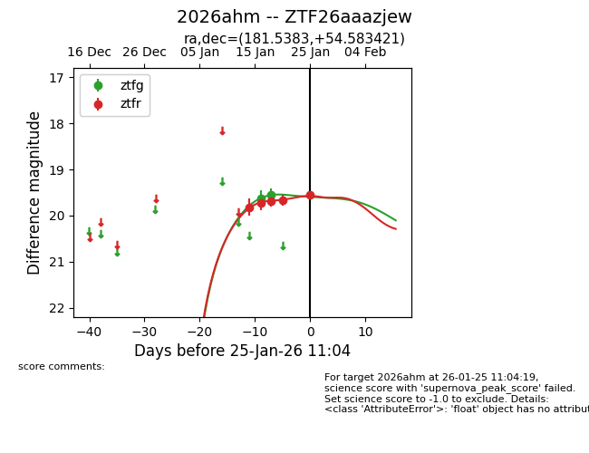
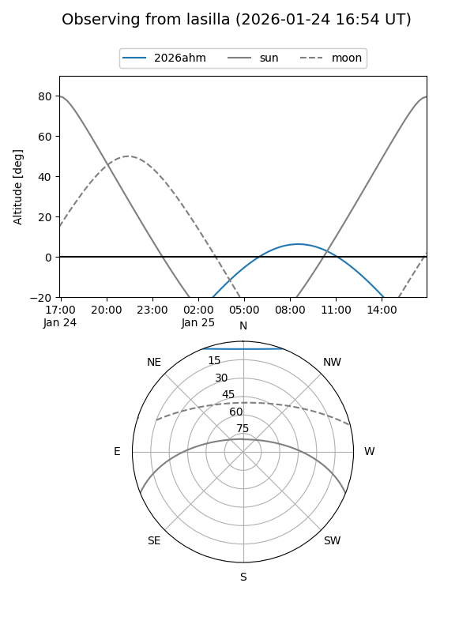
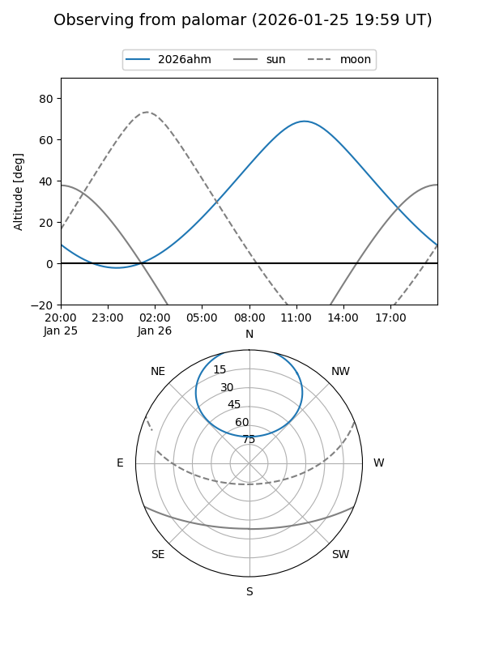
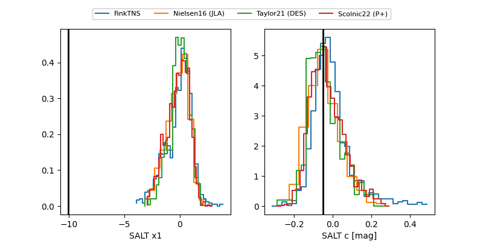

2026ahm
Target 2026ahm at 2026-01-26 09:26
Aliases and brokers:
FINK: link
Lasair: link
ALeRCE: link
TNS: link
YSE: link
alt names
ZTF26aaazjew (ztf,fink_ztf)
2026ahm (tns,yse)
Coordinates:
equatorial (ra, dec) = 181.5383,+54.58342
equatorial (HMS+DMS) = 12:06:09.20,+54:35:00.31
galactic (l, b) = (136.6455,+61.32269)
Flags:
Photometry:
last ztfg=19.54, ztfr=19.55
2 ztfg, 5 ztfr detections
Lightcurve

Visibility


Additional plots
